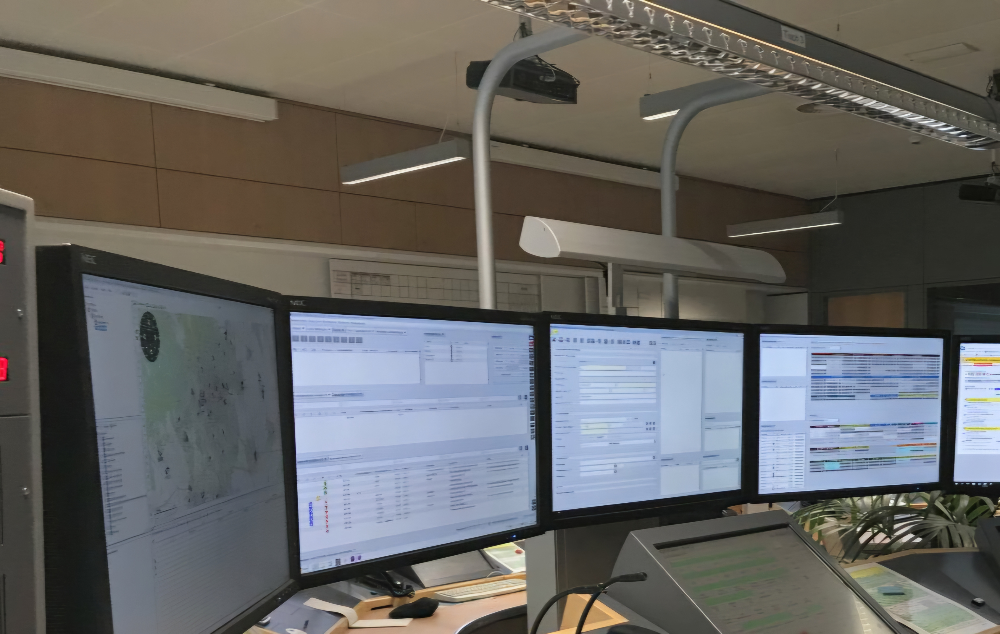
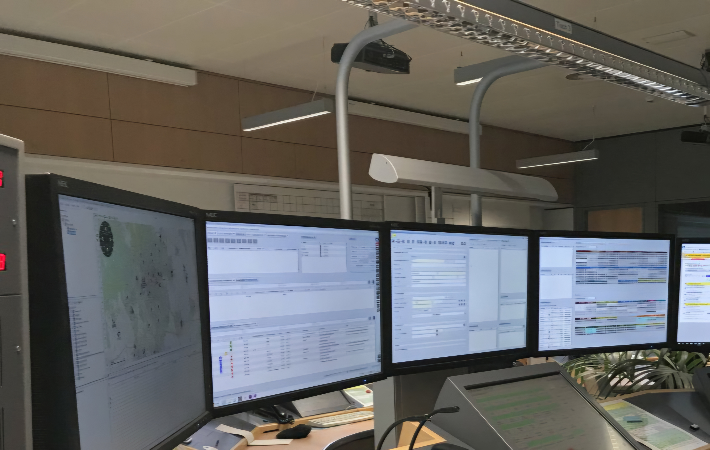

Alarmierung der Freiwilligen Feuerwehr
Willkommen auf unserer Webseite
Die Freiwillige Feuerwehr ist ein unverzichtbarer Bestandteil der Sicherheit unserer Gesellschaft! Auf dieser Webseite erhalten Sie spannende Einblicke in die Alarmierungssysteme, die Abläufe und die technische Entwicklung, die hinter einem reibungslosen Einsatz stehen. Doch was, wie, wann, wo, warum? - Das alles wird hier geklärt.
Was Sie hier erwartet
- Alarmierungsarten: Lernen Sie die modernen Methoden wie Handyapps und Funkmeldeempfänger kennen.
- Ablauf: Erfahren Sie, wie eine Alarmierung vom Eingang bis zum Einsatzort funktioniert.
- Technik: Tauchen Sie ein in die faszinierende Technik hinter der Alarmierung.
- Geschichte: Entdecken Sie, wie sich die Alarmierungssysteme von der Vergangenheit bis heute entwickelt haben.
- Weiterentwicklungen: Ein Blick in die Zukunft der Alarmierungstechnik.
- Ressourcen: Finden Sie hilfreiche Materialien und Links zu diesem Thema.
- Quellen: Ein Verzeichnis aller verwendeten Informationen und Referenzen.
- Konfiguration: Anleitung und Tipps zur Einrichtung der Systeme.
- Kontakt: Hilfe, Ich habe Fragen oder mir ist ein Problem aufgefallen! Was mache ich jetzt? Kontaktieren Sie uns über diese Seite.
- Sicherheit im Notfall: Tipps und Maßnahmen, um in Notfällen sicher zu handeln.
Tippen bzw. Klicken Sie auf das Dreistrichsymbol, um die Sidebar zu öffnen und dann im Menü das gewünschte Thema zu wählen.
Darkmode verfügbar!
Unsere Webseite bietet Ihnen die Möglichkeit, zwischen einem hellen und einem dunklen Modus zu wechseln. Nutzen Sie den praktischen Schieberegler oben links, um den Modus Ihren Vorlieben anzupassen. Der Darkmode ist besonders augenschonend bei Dunkelheit.
Wussten Sie schon?
Moderne Alarmierungssysteme wie die aPager Pro App oder der P8GR Funkmeldeempfänger ermöglichen es, Einsätze schneller und effizienter zu koordinieren. Doch das war nicht immer so. Früher wurden Sirenen oder sogar manuelle Alarmierungsmethoden genutzt, die deutlich langsamer und weniger zuverlässig waren.
Warum diese Webseite?
Wir möchten Ihnen die enorme Bedeutung moderner Alarmierungssysteme näherbringen. Denn nur durch schnelle und zuverlässige Benachrichtigungen können unsere Einsatzkräfte effektiv handeln und Leben retten. Egal ob Technikliebhaber, Feuerwehrinteressierte oder einfach Neugierige – hier finden Sie fundierte Informationen.
Seien Sie dabei!
Möchten Sie selbst Teil der Freiwilligen Feuerwehr werden? Besuchen Sie Ihre lokale Feuerwehr und erfahren Sie mehr darüber, wie Sie helfen können. Jede helfende Hand macht einen Unterschied!
 
